Agentic Process Builder
Reviewing the output of an AI process is close to useless if the only thing you can say is no. APB lets the reviewer name the step that went wrong, re-steer that step, and run it again. Three attempts, then it stops.
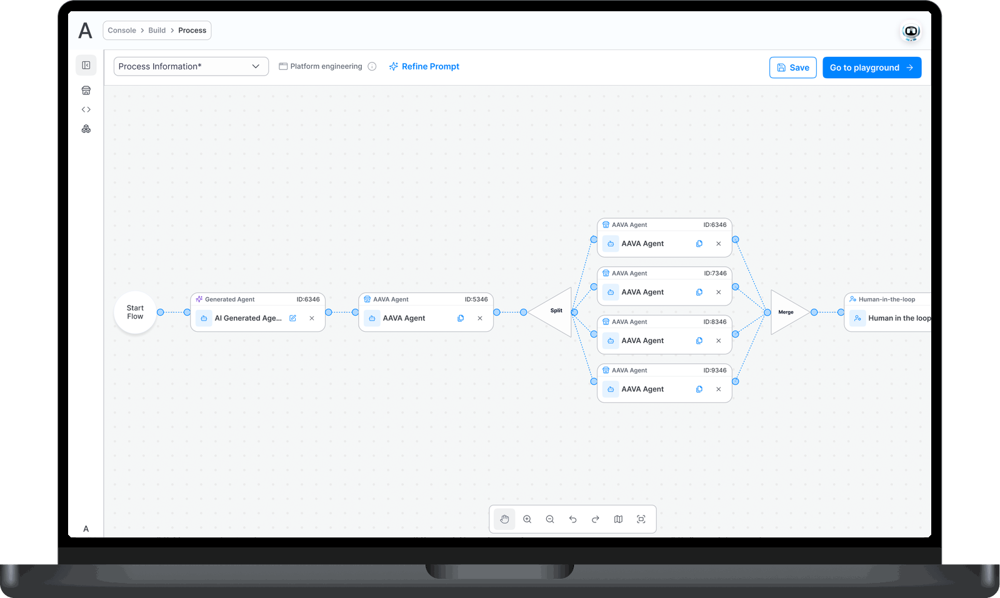
The whole thing, in six lines
Console could build an agent. It could not build a process, and teams were asking to automate a whole module, not run one task at a time.
APB puts agents, workflows and logic on one canvas, so a process gets composed instead of coded.
The logic arrived as a client requirement: split, merge, conditional routing, parallel execution. Real rigour, configured with dropdowns.
Human review started as the builder checking their own output. That is a build step wearing review’s clothes.
So the reviewer got the power to name the agent that caused a bad output, re-prompt it, and re-run. Three attempts, then the run fails.
A simple version shipped to a client. They came back asking for exactly this logic layer.
Why a process builder at all
Console could build an agent. It could not build a process.
Console let a team create agents and chain them into pipelines. That answers one question: run this task with AI. It does not answer the question teams actually arrived with, which was automate this whole module.
A team automating procurement, or claims intake, or a support vertical is not asking for an agent. They are asking for a dozen steps with branches in them, work that runs in parallel and has to rejoin, and a person who signs off before anything leaves the building.
APB is where that gets built. It sits under Build in Enterprise Console, alongside agents and pipelines, in Ascendion’s AAVA platform.
The part that separates it from the rest of Console: agents, workflows and logic compose on the same canvas. You are not choosing between building an agent and building a flow. You drop both and wire them together.
Two people, not one
The person who builds a process is almost never the person qualified to judge what it produces.
Two roles matter here.
The flow designer composes: drags agents and workflows onto the canvas, adds the logic that branches and rejoins them, and decides where a human has to sign off.
The reviewer is a subject matter expert. On a financial process, someone who can actually tell whether a fraud assessment holds up. On a delivery process, the architect. They may never open the canvas, and they should not have to.
That gap is the reason the review model needed rebuilding, and it is where most of this case study goes.
Decision: one canvas, extended
A process editor separate from the agent editor would have been two products pretending to be one.
Console already had a canvas for chaining agents into pipelines. The obvious path for a process builder is a new surface with its own vocabulary, on the reasoning that a process is a bigger thing than a pipeline.
I extended the existing one instead.
The left rail carries three groups: the artefact library of processes, workflows and agents you already own, then logic, then building blocks for start, end and human review. Everything is a drag. Editing an agent opens Console’s existing agent screen in a panel and submits through Console’s existing approval flow, rather than a second editor that would drift from the first inside a quarter.
What it cost
The rail got crowded. Seven logic types, three artefact types and three building blocks is a lot for one column, and grouping is doing heavy work to keep it readable. If the logic set grows much further, the rail is the first thing that breaks.
What it bought is that someone who has built an agent in Console already knows how to build a process. One mental model, one editor, one approval path.
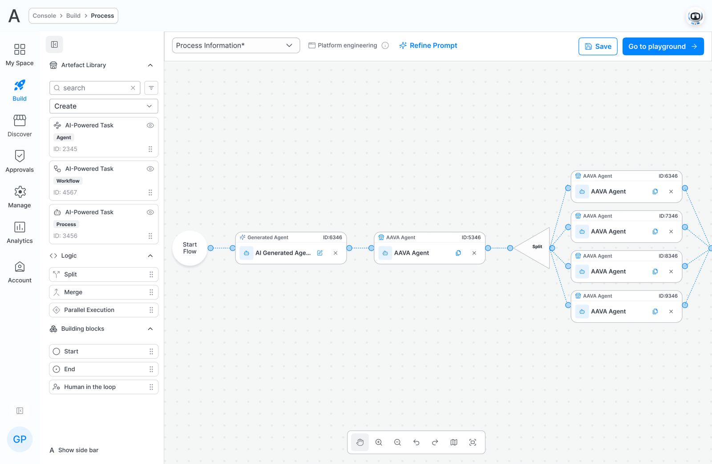
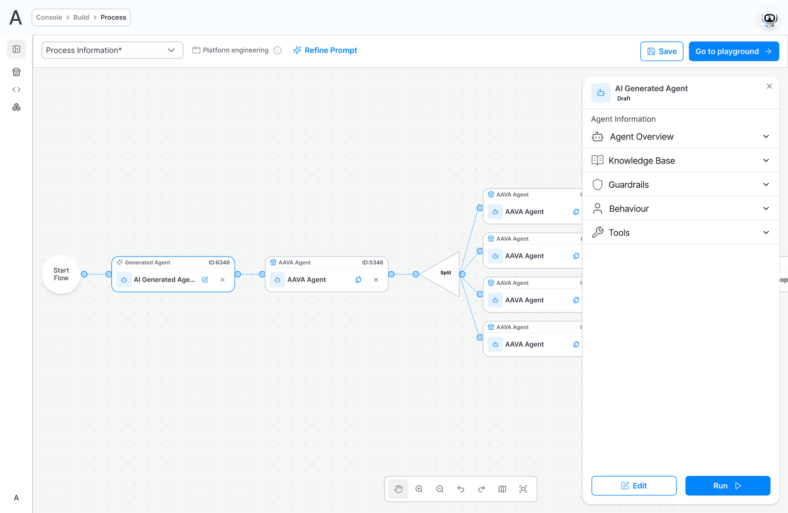
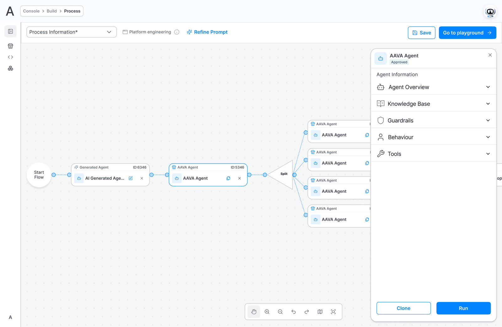
Decision: real process logic, configured with dropdowns
The client asked for process logic. Process logic is not a beginner’s tool.
Split, merge, if-else, multi-way switch, pattern matching, predicate routing, parallel execution. That set arrived as a client requirement, and it maps onto BPMN, the standard notation for modelling business processes.
It is also a genuine tension. That grammar exists because processes are genuinely hard: branches that fan out, parallel work that has to rejoin, conditions that decide which path a run takes. The person APB was sold to does not write schemas and is never going to write a mapping expression.
So the rigour stays underneath and the surface stays visual. Deciding how four parallel branches recombine is the hardest configuration in the product, and it is done with a strategy dropdown, radio buttons for failure behaviour, and a drag to pair outputs together. No schema knowledge, no scripting, at any point.
What it cost
Expressiveness. Four merge strategies exist: combine, prioritise, override, and a guided custom mapping. A user who needs something outside those four cannot express it, and the escape hatch is guided rather than open.
The client did not ask for a simpler tool. They asked for a real one that a non-technical person could operate.
Those are different requests, and only the second one is difficult.
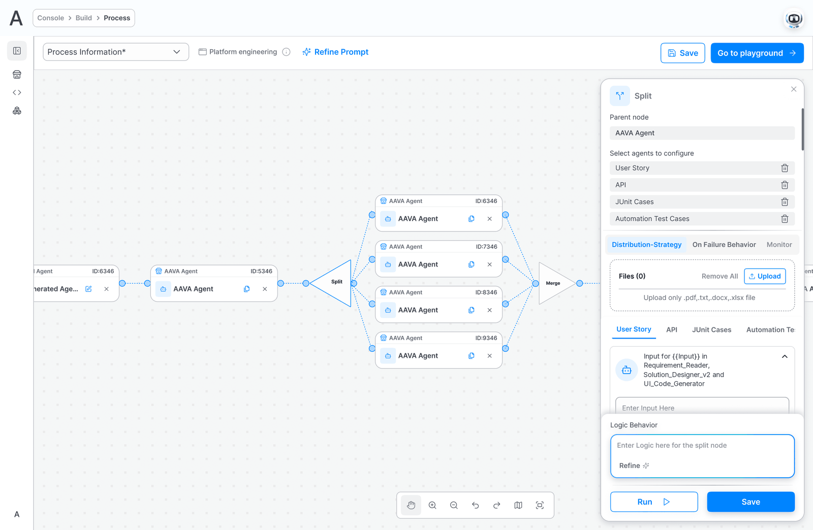
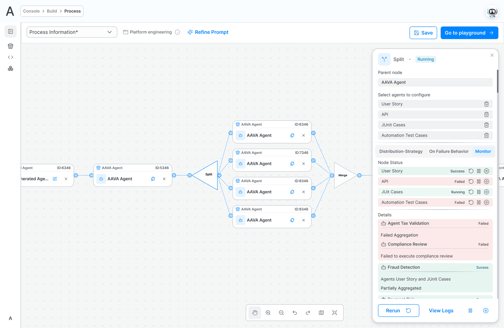
Decision: review is a repair, not a gate
In May, the human in the loop was the person who built the flow, checking their own output.
That is not review. It is a build step wearing review’s clothes, and it passed testing precisely because the builder already knew what the output was supposed to be. That knowledge is exactly what a real reviewer lacks, and that bias is exactly what a real reviewer exists to correct.
I proposed three changes. All three became requirements.
Assign someone who can actually judge it
A checkpoint names a primary and a secondary assignee, with a reminder if it sits unattended. The reviewer is chosen for domain knowledge, not for proximity to the build.
Give them enough to judge with
A checkpoint carries supporting documents: what this step was meant to produce and what good looks like. Without that, a subject matter expert reviewing a step they did not design is guessing, and a guessing reviewer approves. Context is not a courtesy here, it is the thing that makes the checkpoint mean anything.
Let them fix the cause, not refuse the symptom
This is the one that mattered.
A reviewer looking at a bad output can usually tell which upstream step produced it. The model that was there gave them nowhere to put that knowledge. So instead of approve or reject, the reviewer selects the agent or workflow that actually caused the problem, writes an additional prompt for that specific step, and re-runs from there.
Three attempts, and then a real ending
The reviewer gets three. Inside those three they have to land on one of two answers: approve it, or reject it. A third bad output is not a fourth try, it is a decision.
If they reject at the end, the run enters a failed state. Recovering it is deliberately somebody else’s job: the process creator or an administrator picks it up, changes what needs changing, and runs it again. An administrator can also act on a pending task directly, so one reviewer on leave never becomes a stalled process.
One rule follows from all of this, and it is worth stating because it is the kind of thing that quietly goes wrong. A re-run does not re-open checkpoints that were already approved. The three attempts belong to the checkpoint under review, and passing back through settled ground does not ask anyone to sign the same thing twice.
Why the cap
An unbounded retry is a loop with a person inside it. Three is enough for a real correction, and few enough that a genuinely broken step reaches someone who can change the flow rather than being re-prompted forever by someone who cannot.
Reject tells the system the output was wrong. It does not tell it what was wrong, or where.
A reviewer who can only reject is a rubber stamp with extra steps.
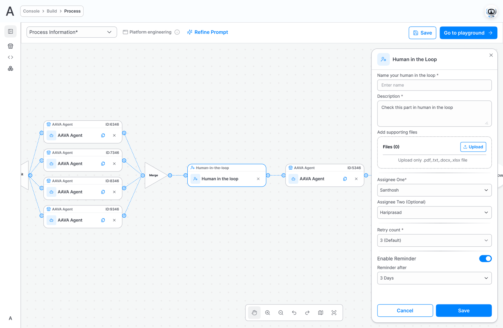
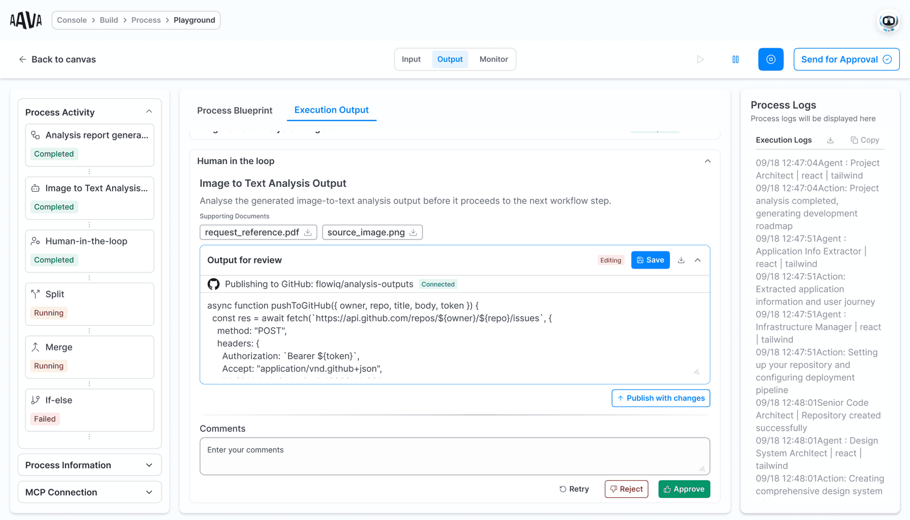
The reviewer reads the output next to its supporting documents, and can correct it in place. 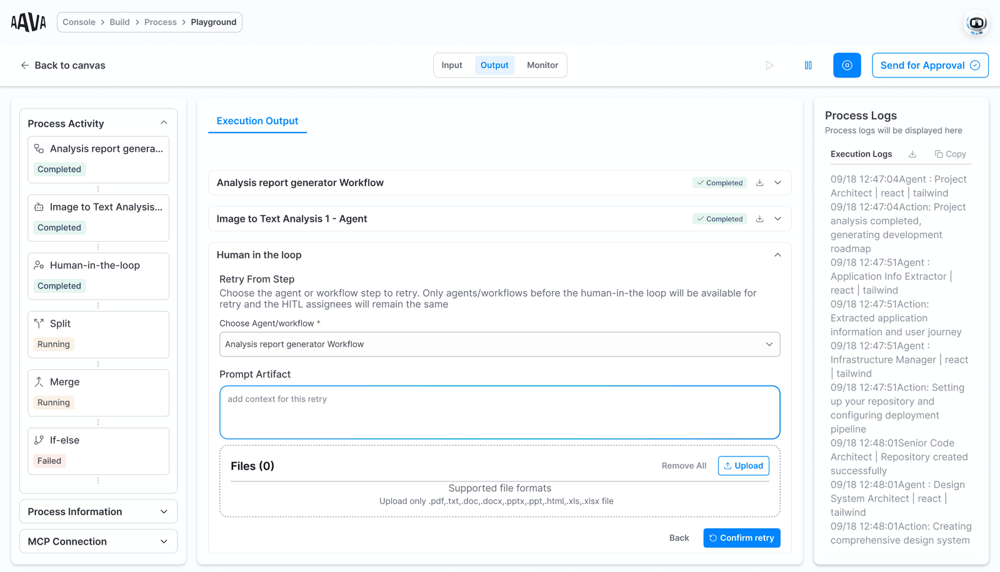
Or they retry: pick the step that caused the problem and tell it what was wrong. 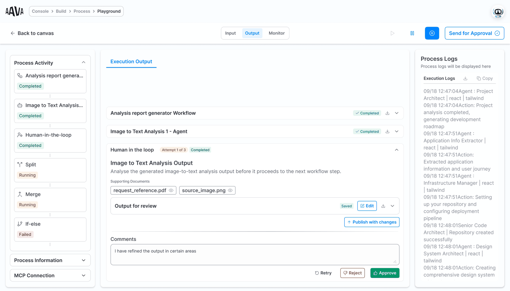
That step runs again, and its new output comes back to the same reviewer. 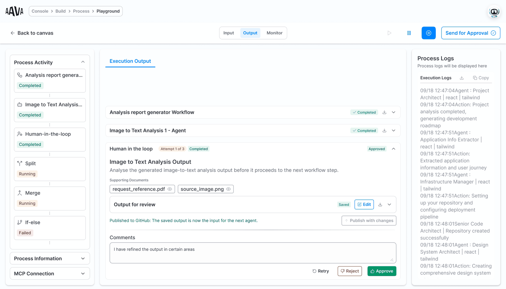
Approved, and the run carries on from the checkpoint.
Decision: a merge either validates or it fails
Parallel branches that quietly drop a result are worse than parallel branches that stop.
When a split fans work out to four agents and a merge brings it back, the merge is where trust is won or lost. So the rules there are deliberately strict.
A merge waits for every required branch. Before anything aggregates, each output is checked for completeness and for schema validity, and anything corrupt is excluded with the reason shown to the user rather than swallowed. The same inputs produce the same aggregation every time.
When a branch does fail, the designer has already chosen what happens: aggregate what arrived, retry and continue, or fail the whole aggregation. A run reports success, partial success, failed, or retry pending, and each of those words means the same thing every time it appears.
What it cost
There is no fast, best-effort merge. The gates apply even when a user would rather have a rough answer now and clean it up later.
The product is sold on output a non-technical person can act on without checking the working. A merge that silently drops a branch would end that in a single incident.
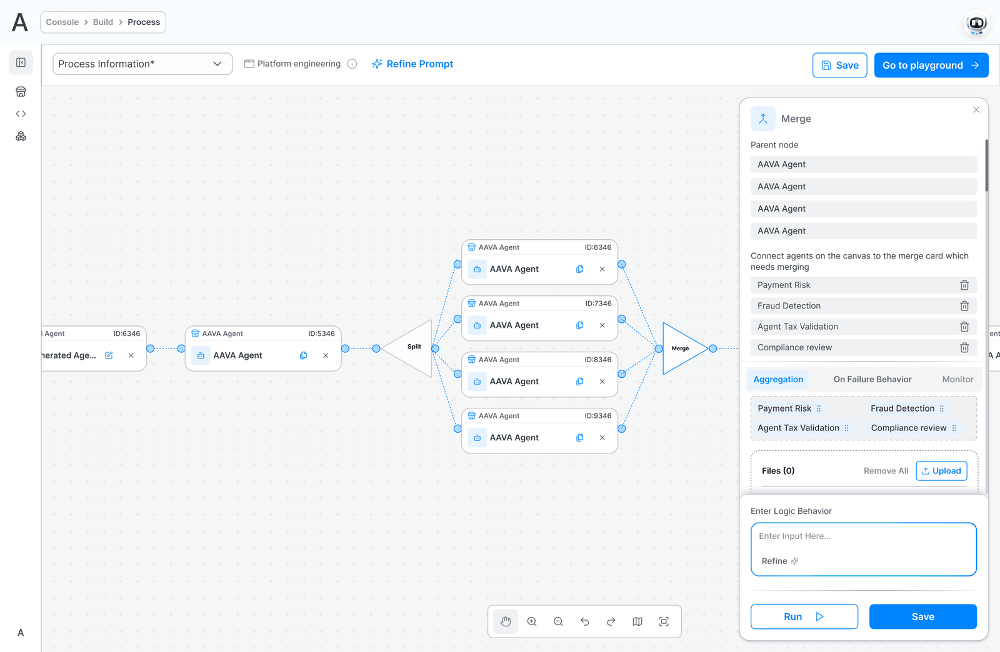
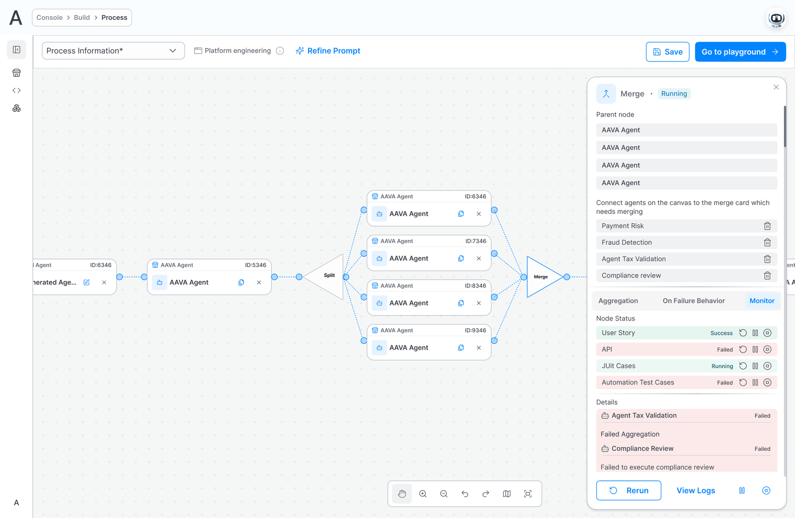
Watching a run
The output of a long run is an infinite scroll. Something has to be the way in.
A running process is watched from an activity bar: every agent, workflow and dependent tool listed vertically, each carrying a live status badge. Running, not running, failed, needs input.
Status is the obvious half of that. Navigation is the half that matters.
A process of any real size produces output that keeps going, and scrolling a stream to find what one particular agent produced is not a task anyone should be handed. So the bar does double duty. Click any step in it and that step’s output comes to the top centre of the page, ready to read.
That makes it a table of contents for a stream. Where am I, what is happening, and show me that one, answered in the same column.
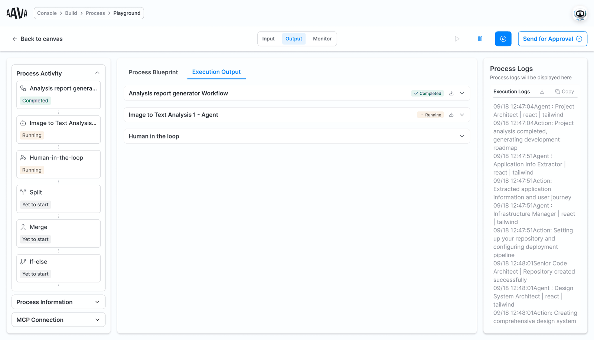
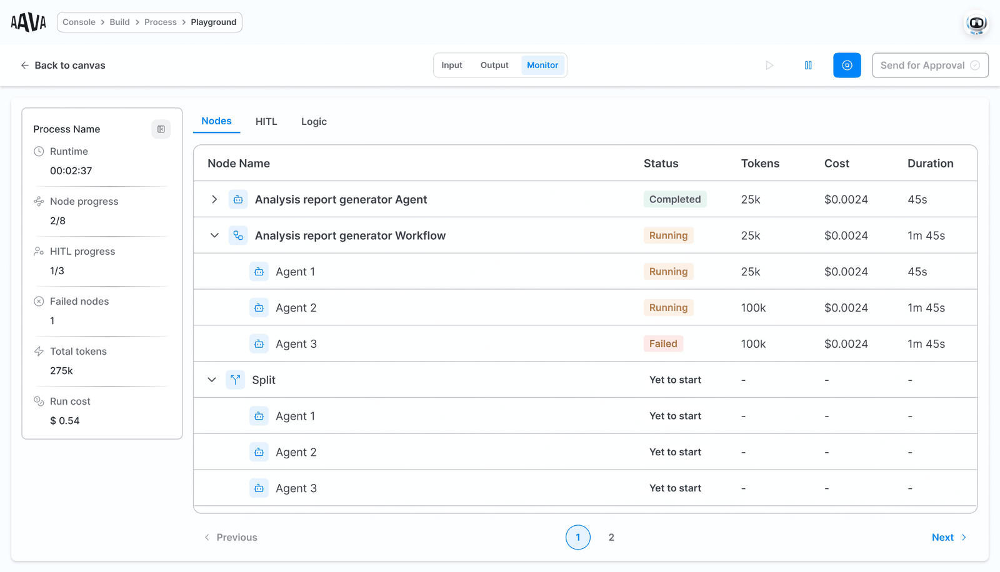
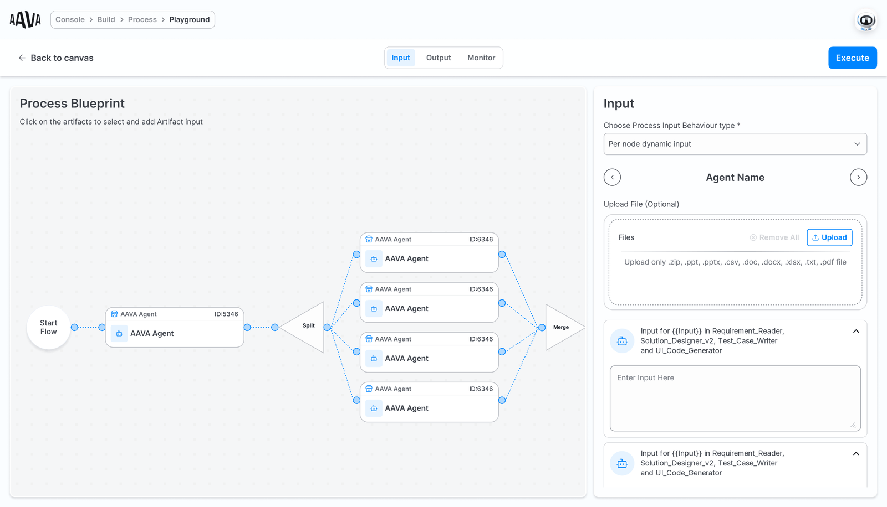
The client came back
A simple version shipped. What came back was a request for the hard part.
The first release was a proof of concept: agentic process building without the logic layer. It went to a client.
What returned was a list of what they wanted next, and it was the branching, the parallel execution and the routing. That request is the reason APB is being expanded rather than maintained.
The design in this case study was built through August and September 2026 and sits in the development environment now, where the internal team runs it and audits it. Engineering is working through logic execution and the natural language prompt layer, both of which carry real technical constraints.
I have no adoption figure to give you. The version containing this design is not in front of users yet. What exists instead is a client who used the simple version and came back asking for precisely the layer being built now. That is the closest thing to validation available before a launch, and I would rather show it than a projection.
What isn’t built yet
The design is ahead of the build, and some of it has not been tested by anybody.
Three surfaces are specified and not yet prototyped: the fan-in result view, the approval history and audit screen, and the conditional routing observability page. Each has acceptance criteria written against it. None has been in front of a user.
The logic execution layer and natural language prompt entry are both live engineering problems rather than settled ones. What a person can describe in a sentence and what the orchestration engine can reliably assemble from that sentence are not yet the same set, and closing that gap is the current work.
Questions about any of these decisions?
The part I’d most like to be pushed on is the review model, and the three-attempt cap in particular. It was a judgement call, and I can show the working.